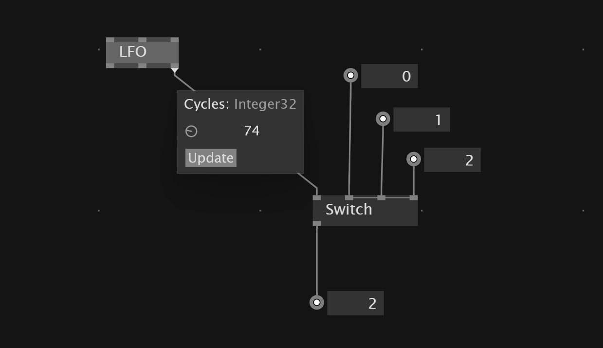
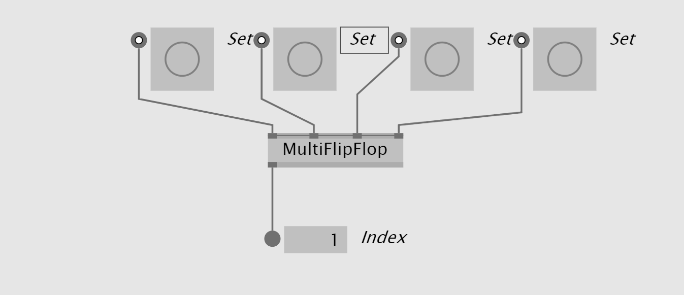
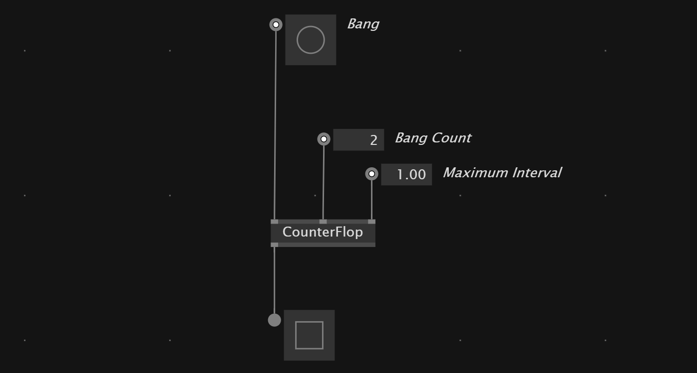

Controlling Patches
LFO
A LFO generates a continuos value which is rising from 0 to 1. It also outputs a Bang signal every time a new cycle starts and the amount of cycles it ran since it got reseted last time. We can use that signal to trigger events in our patch at cyclic intervals.
Toggle
We can use a LFO and a Toggle node to toggle a value every time the LFO starts a new circle. The Reset input also allows to hold the value false. So we can switch the toggle on and off over the Reset pin.
Sample and Hold
S+H node keeps the value of the input node as long as Sample input is true. It ignores the input values as long as the Sample input is false.
It is useful to hold the output of a random node at a specific moment.

Switch
Switch node allows us to decide which of the inputs of the node we want to show. In the first pin we can set the index of the element that we want.
 If the index is bigger than the amount of inputs, it starts again at the beginning. Add more inputs with +/-
If the index is bigger than the amount of inputs, it starts again at the beginning. Add more inputs with +/-
The Switch node will evaluate all inputs - even when there aren't the currently selected. This can be important performance wise. Maybe consider an if region instead.
Switch with LFO
A common technique to switch between two values with the same switching time is to use a LFO and plug it's Cycles output into the index input of the Switch.

Switch with FlipFlop
We can switch between two values using a FlipFlop node as the deciding factor for which output to set. With the FlipFlop we can detect if ether state 1 or state 2 is true and depending on that switch between values.
Swap
The Swap nodes exchanges its both inputs when the Condition input is set to true.
FlipFlop
The FlipFlop sets out to true if it is triggered on the left input and resets it to false when it is triggered on the right.
So we can control the state of true of false with two bang inputs.
MultiFlipFlop
The MultiFlop allows multiple inputs and returns the index of the triggered input.

If
The if region only get's executed when a condition is true. It also won't evaluate the nodes inside of the region while the condition is true.
So if a condition is met, it takes what is coming in and does the operation on it. If the condition not true, the data gets passed to the output without doing operation inside.
Toggle between two values
To toggle between two values we simply set a Toggle node as the index input of a switch node and then plug two values into the switch
Logital primitives
NOT inverts a boolean value.
true -> false
false -> true
AND only returns true when all values are true. This get used to make sure that two states or events are met at the same time. For example checking if mouse is clicked AND mouse cursor is over a specific element.
AND(Spectral) returns true when all values in the sequence are true.
OR returns true when at least on of the inputs is a true value.
This can be useful when we want to bundle triggers from different parts of the sketch to trigger a specific logic.
OR(Spectral) returns true when just one of the values in a sequence is true.
XOR returns false when both values ether true or false and returns true when just one of the values is true.
NOR only returns true when none of the values are true.
NAND for NOT AND returns only true when both values are NOT true.
Register off to on and on to off behavior
If we want to register if a boolean value went from off to on or from on to off we can use a TogEdge. If the input goes from off to on output 1 UpEdge* gets triggered.
If input goes from *on to off* thenDown Edge` gets triggered.
Change State With Two Input Bang
With a FlipFlop we can change a State by two input Bang signals one for Set and the other for Reset.
So FlipFlop stays true when it got set by the Set input and stays true till Reset get set to true.
Detect If Value got True in certain time
CounterFlop allows to check if a value got true certain times in specific time interval

Only execute when Input changes
A Cache region allows to execute logic only when the input into the Cache changes.
Trigger events
Trigger
The Trigger node repeats randomly a bang signal in between the minimal and maximum interval.
Changed
A Changed node let's use register if a value has changed. It shows if the value is different from the value before(from the last frame) and creates a boolean that we then can use to trigger logic like only if something changes the logic gets triggered
MonoFlop
When the MonoFlop get triggered it sets the output to true for a defined time.
TogEdge
The TodEdge detects if there was a change from false to true or the other way around. When the input changed from false to true it bangs the Up Edge output. When the change was from true to false it bangs the Down Edge.
Especially when we want to use input devices to trigger something TogEdge is super useful.
OnOpen
If you wan't to trigger some logic when you open your patch or the application you can use the OnOpen node.
Send and Receive
We also can send data inside a patch with Sendand Receive Nodes. They need custom channel name and a type. This works without a frame delay.